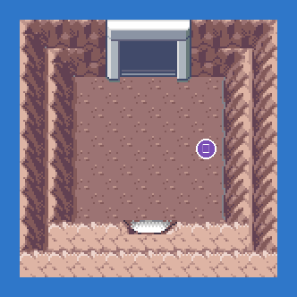
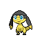
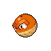

PokémonEMMA'S EMERALD
OFFICIAL Strategy Guide
New Mauville Entrance
TIP
Wild Pokémon here are LV22–26. Time of day: M = morning (6–10), D = day (10–19), E = evening (19–20), N = night (20–6).
Event 1: Wattson's favour
Wattson asks you to shut down the generator under Mauville (enter from Route 110 with the Basement Key). Voltorb and Magnemite inside, TM Thunderbolt at the end.
Legendary Pokémon here
Static encounters: walk up and press A. Caught = gone for good; beaten or fled = back next visit.
Catch ’Em All! Grass & caves
 | Voltorb: | LV24 | Common | MDEN |
 | Magnemite: | LV24 | Common | MDEN |
 | Tadbulb: | LV24–26 | Uncommon | MDEN |
 | Joltik: | LV23–26 | Uncommon | MDEN |
 | Emolga: | LV24–25 | Uncommon | MDEN |
 | Wattrel: | LV24–26 | Uncommon | MDEN |
 | Blitzle: | LV22–24 | Uncommon | MDEN |
 | Plusle: | LV22–25 | Uncommon | MDEN |
 | Electrike: | LV24–25 | Uncommon | MDEN |
 | Luxio: | LV22–24 | Uncommon | MDEN |
 | Yamper: | LV22–26 | Uncommon | MDEN |
 | Pincurchin: | LV23–25 | Uncommon | MDEN |
 | Flaaffy: | LV24–25 | Uncommon | MDEN |
| Toxel: | LV22–23 | Uncommon | MDEN | |
 | Dedenne: | LV24–26 | Uncommon | MDEN |
 | Mawile: | LV24–25 | Uncommon | MDEN |
 | Morpeko (Full Belly): | LV24–26 | Uncommon | MDEN |
 | Pachirisu: | LV24–26 | Uncommon | MDEN |
 | Tynamo: | LV22–25 | Uncommon | MDEN |
 | Elekid: | LV25–26 | Uncommon | MDEN |
 | Minun: | LV23–24 | Rare | MDEN |
 | Helioptile: | LV23–24 | Rare | MDEN |
 | Pichu: | LV24 | Rare | MDEN |
 | Hisuian Voltorb: | LV26 | Rare | MDEN |
 | Pawmo: | LV26 | Rare | MDEN |
 | Igglybuff: | LV25 | Rare | MDEN |
50
Walkthrough